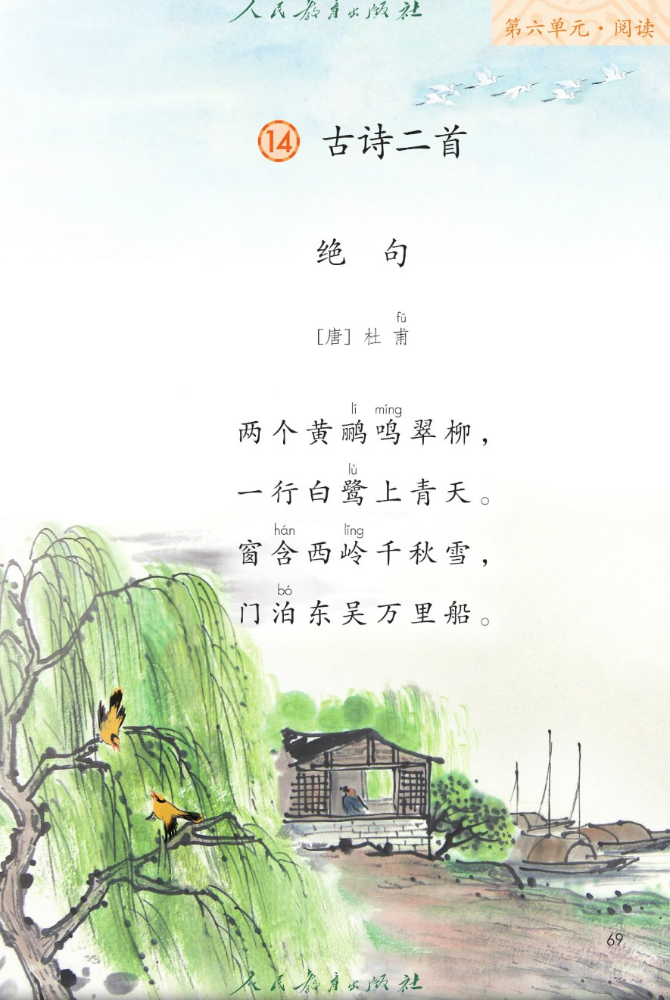
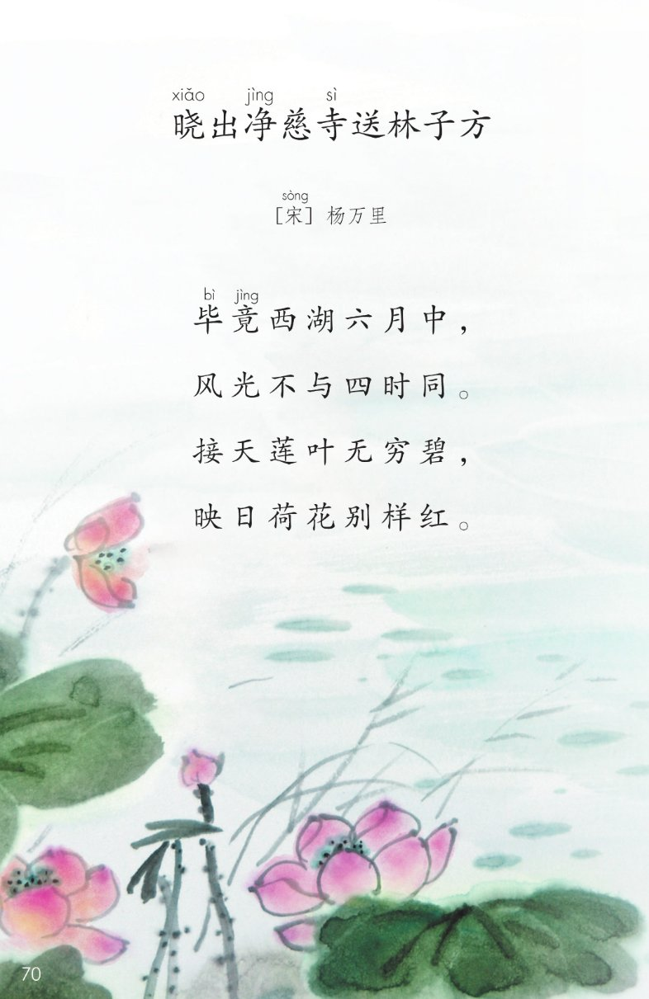
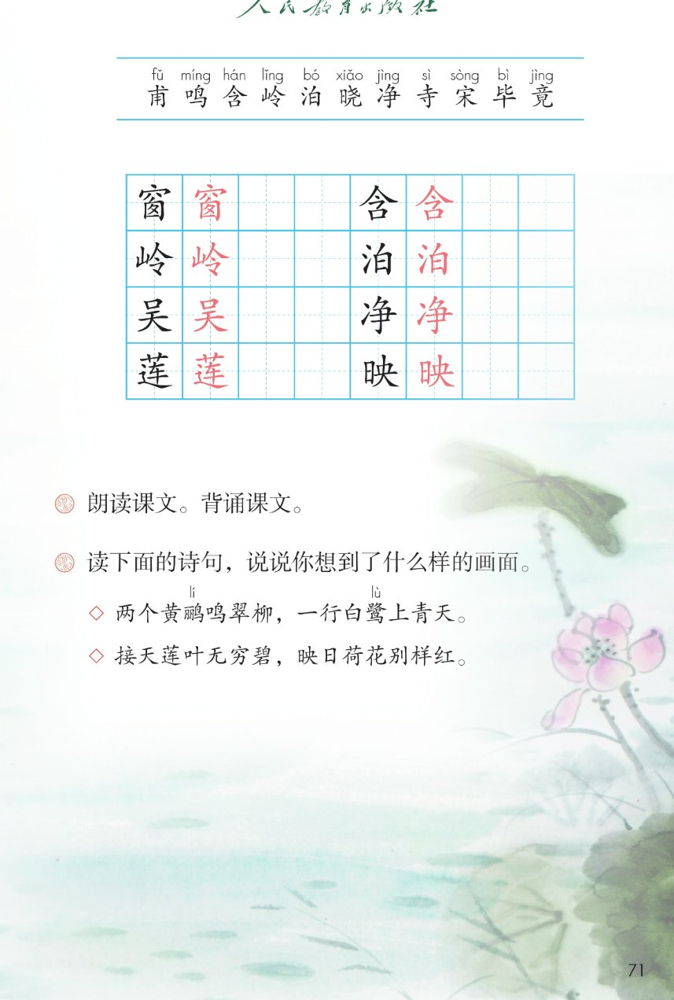

×
🔊 手机听不到声音怎么办？
① 先把手机
媒体音量调大 ，确认没开静音、没连蓝牙耳机；在微信里打开的，点右上角「⋯ → 用浏览器打开」。
② 还是没声音？到应用商店免费下载
Microsoft Edge 浏览器 （它自带朗读发声），用它打开本页面就能出声。
③ 换了 Edge 仍然没声音，说明这部手机的
硬件/系统不支持 网页朗读（多为老旧机型）；近几年买的新手机一般都能正常播放。
→ 打开声音自检
🌿 第 14 课《古诗二首》· 有声图文带读
统编版语文 · 第六单元·阅读 · 课本 第 69~71 页 · 作者：宋 杨万里 · 唐 杜甫
古诗 2 首 · 共 8 句
会认字 11
会写字 8
听写词 10
近义词 4 组
深入理解 8 题
本课本领 朗读·背诵·想画面
🎧 五步学（可随时点任意一句、一个字、一个词单独听）： ① 听读课文 ——一句一句读，读到哪一句哪一句发光；开「跟读」后读完一句留时间让你自己读。② 学字词 ——11 个会认字、8 个会写字（含书写提示），点一个读一个。③ 词语·听写·造句 ——先读课后题里的诗句，再听写 10 个词（读两遍→你写→报答案→听示范句），最后听 4 组近义词辨析。④ 深入理解 ——8 道题（认知 / 理解 / 运用 / 拓展），开放题答案不唯一，先想后看。⑤ 背诵闯关·分角色 ——按五步把两首背下来，再听杨万里和杜甫各诵自己写的诗。
📚 本册第六单元·阅读（照课本目录）： 第 14 课 古诗二首 → 本单元其他课文 → 语文园地六
点诗前的 ①② 听整首
🔁 跟读模式：关
👁 隐藏注音（自测用）
注音只标本课要认的字和课本在诗中标了音的字（鹂、鹭），读音来自课本第 71 页生字表
🎤 朗读要求（老师标准） 毕竟 的「竟」读第四声；莲 叶的莲读第二声；黄鹂 的鹂读第二声；一行 白鹭的读第四声；门泊 的泊读第二声；窗含 的含读第二声；古诗的节奏 ：毕竟／西湖／六月中；两个黄鹂／鸣翠柳（四字一顿）；不添字、不漏字 ：逗号停得短，句号停得长，一句一句读清楚；边读边想画面 ：先看满湖望不到边的莲叶荷花，再看草堂柳枝上的黄鹂、飞上蓝天的白鹭和远处的雪山；感情 ：西湖读得明丽、欢喜，草堂读得安静、悠远。
①
绝 句 [唐] 甫fǔ 杜甫
两个黄鹂lí 鸣míng 翠柳，
一行白鹭lù 上青天。
窗含hán 西岭lǐng 千秋雪，
门泊bó 东吴万里船。
📌 这首诗讲 ：黄鹂鸣柳、白鹭飞天，窗含西岭雪、门泊万里船——一动一静，写出草堂春天的开阔与安宁。
②
晓xiǎo 出净jìng 寺sì 送林子方 [宋] 宋sòng 杨万里
毕bì 竟jìng 西湖六月中，风光不与四时同。
接天莲叶无穷碧，
映日荷花别样红。
📌 这首诗讲 ：六月西湖最明丽——莲叶接天无穷碧，荷花映日别样红，写尽夏天西湖的鲜艳与开阔。
🤔 想一想（点我可跳过）
点一张图，听读整页

第 69 页 · 《绝句》全诗（唐·杜甫）

第 70 页 · 《晓出净慈寺送林子方》（宋·杨万里）

第 71 页 · 会认字、会写字与课后题
📖 人教版《语文》二年级下册 · 课本第 69~71 页 · 图片仅供个人学习，版权归人民教育出版社所有
点一个字，听读音、词语和课文里的句子
结构、部首、笔画与书写提示为通用规范，供参考，以教材和老师的指导为准
窗
chuāng
窗含 · 窗户
12 画 · 上下（穴）
上穴下囱，囱里写个夕
岭
lǐng
西岭 · 山岭
8 画 · 左右（山）
左山窄、右令宽，人字头盖住卩
吴
wú
东吴 · 吴国
7 画 · 上下（口）
上口扁、天下宽，两横一长一短
莲
lián
莲叶 · 莲花
10 画 · 上下（艹）
草头宽扁，连字走之托住
含
hán
包含 · 窗含
7 画 · 上下（口）
今字头舒展，盖住下面的口
泊
bó
停泊 · 泊船
8 画 · 左右（氵）
三点水成弧，白字撇短钩稳
净
jìng
干净 · 净慈寺
8 画 · 左右（冫）
两点水靠上，争字中横最长
映
yìng
映日 · 倒映
9 画 · 左右（日）
左日窄、右央宽，捺要伸出
点一行，听课后题和诗句
📖 课后题（课本第 71 页照录） ：① 朗读课文。背诵课文。 ② 读下面的诗句，说说你想到了什么样的画面。
课后题 1 朗读课文。背诵课文。
课后题 2 读下面的诗句，说说你想到了什么样的画面。
诗句一 两个黄鹂鸣翠柳，一行白鹭上青天 。
诗句二 接天莲叶无穷碧，映日荷花别样红 。
读两遍 → 你在纸上写 → 报答案 → 听示范句
准备听写 · 共 10 个词
○ ○ ○
点下面的「开始听写」，听到一个词就写一个词。
▶ 开始听写
🔁 再读一遍
👁 看答案
点词听读，点句子听示范句，再自己说一句
1 西湖 诗中的词 · 湖
示范句：毕竟西湖六月中。
✏️ 我也能说：什么 + 在西湖边
2 莲叶 会写字 · 莲
示范句：接天莲叶无穷碧。
✏️ 我也能说：什么 + 像莲叶
3 荷花 诗中的词 · 花
示范句：映日荷花别样红。
✏️ 我也能说：什么 + 像荷花
4 山岭 会写字 · 岭
示范句：窗含西岭千秋雪。
✏️ 我也能说：哪里 + 有山岭
5 窗户 会写字 · 窗
示范句：从窗子里看出去是远处的雪山。
✏️ 我也能说：哪里 + 有窗户
6 包含 会写字 · 含
示范句：窗含西岭千秋雪的含，是包含的意思。
✏️ 我也能说：什么 + 包含什么
7 停泊 会写字 · 泊
示范句：门泊东吴万里船。
✏️ 我也能说：什么 + 停泊在岸边
8 干净 会写字 · 净
示范句：净慈寺的净是干净的意思。
✏️ 我也能说：什么 + 很干净
9 倒映 会写字 · 映
示范句：荷花倒映在水里。
✏️ 我也能说：什么 + 倒映在 + 哪里
10 东吴 会写字 · 吴
示范句：门泊东吴万里船。
✏️ 我也能说：什么 + 来自东吴
相同点 / 不一样在哪 / 各造一句
毕竟 — 到底
相同：都表示到最后、终究是这个样子 。
不一样：毕竟 是书面语，常放在句子开头；到底 是平时说话用的词。课文里说：毕竟西湖六月中。
毕竟：毕竟西湖六月中。
无穷 — 无尽
相同：都表示没有尽头、非常多 。
不一样：无穷 多写空间、数量，比如无穷碧的莲叶；无尽 多写时间、情感。课文里说：接天莲叶无穷碧。
无穷：接天莲叶无穷碧。
别样 — 特别
相同：都表示和一般的、平常的不一样，有出众的意思 。
不一样：别样 是古诗里的说法，显得文雅；特别 是平时说话天天用的。课文里说：映日荷花别样红。
别样：映日荷花别样红。
鸣 — 叫
相同：都表示动物发出声音 。
不一样：鸣 多写鸟叫，也带一点诗意，比如鸣翠柳；叫 是最普通的说法，什么声音都能用。课文里说：两个黄鹂鸣翠柳。
鸣：两个黄鹂鸣翠柳。
诗里的颜色 碧绿 红 青 白
写夏天的词 西湖 六月 莲叶 荷花
诗里的数字 两个 一行 千秋 万里
表示动作的词 鸣 含 泊 上
标「答案不唯一」的题，说得有道理都对
认知 《晓出净慈寺送林子方》和《绝句》各是谁写的？写的分别是哪儿、什么季节？看解析
🤔 想一想
解析：
晓出净慈寺送林子方，宋，杨万里；绝句，唐，杜甫。
毕竟西湖六月中，六月是夏天；两个黄鹂鸣翠柳，写的是春天。
一首写夏天的西湖，一首写春天的草堂。
认知 课后第二题让我们读哪两句诗、想画面？两句分别想到了什么？看解析
🤔 想一想
解析：
两个黄鹂鸣翠柳，一行白鹭上青天：黄鹂叫、白鹭飞。
接天莲叶无穷碧，映日荷花别样红：满湖莲叶、红艳荷花。
一首有动有静，画面就活了。
理解 「接天莲叶无穷碧，映日荷花别样红」写了哪两种颜色？诗人为什么这样写？看解析
🤔 想一想
解析：
写满湖望不到边的莲叶，一片绿。
写太阳下格外好看的荷花。
绿和红放在一起，夏天就亮起来了。
理解 「窗含西岭千秋雪，门泊东吴万里船」里的「含」和「泊」是什么意思？看解析
🤔 想一想
解析：
隔着窗看远山，雪像被窗子框住。
门口停着从东吴来的船。
窗前是静的雪，门口是停的船。
理解 「映日荷花别样红」的「别样」是什么意思？看解析
🤔 想一想
解析：
不是普通红，是格外红。
有太阳照着，颜色更亮。
要读出赞叹、往上扬。
运用 课后题：读诗句，说说你想到了什么样的画面。看解析
🤔 想一想
解析：
莲叶、荷花、黄鹂、白鹭、雪、船。
诗人站在窗前看，心里安静又欢喜。
明亮、热闹或安静，都行。
🌈 答案不唯一，说得有道理都对
运用 照样子用「碧绿、红色」或「两个、一行」这样的词，说一句写夏天池塘的话。看解析
🤔 想一想
解析：
接天莲叶无穷碧，映日荷花别样红。
荷叶、荷花、青蛙、蜻蜓，都可以。
说一句为什么这样写，句子更完整。
🌈 答案不唯一，说得有道理都对
拓展 两首诗一首写西湖、一首写草堂，你更喜欢哪一首？为什么？看解析
🤔 想一想
解析：
西湖明丽，读着心里亮堂。
有黄鹂白鹭，有动有静，读着安静。
一首写夏、一首写春，各有各的好。
🌈 答案不唯一，说得有道理都对
点一步，听这一步
4
《绝句》四句
💬 背诵支架：先 大声读三遍 → 再 看着每句的头两个字背 → 接着 合上书一句一句往下接 → 最后 两首连起来背给同桌听。
点一个角色，听他读的那几句
🌅 杨万里·起句
“毕竟西湖六月中，”
💬 读得肯定、亮一点 ，像在说六月的西湖最好
🌅 杨万里·承句
“风光不与四时同。”
💬 读得舒展 ，和前一句连起来
🌅 杨万里·赞荷叶
“接天莲叶无穷碧，”
💬 声音开阔 ，像望不到边的绿
🌅 杨万里·赞荷花
“映日荷花别样红。”
💬 读得赞叹、往上扬
🐦 杜甫·写动景
“两个黄鹂鸣翠柳，一行白鹭上青天。”
💬 前句轻快 ，黄鹂的鸣读得活泼；后句舒展
🐦 杜甫·写静景
“窗含西岭千秋雪，门泊东吴万里船。”
💬 悠远、安静 ，雪和船读得慢一点